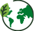
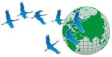

Qadın inkişaf gələcək
İctimai Birliyi
Qadın İnkişaf Gələcək Sağlamlıq İqlim Dəyəşkənliyi

- Bizim məqsədimizdir


Bizim haqqımızda
Qadın İnkişaf Gələcək İctimai Birliyinin missiyası qadınların sosial həyatda rolunun artırılmasına kömək
etməkdir. Birliyin məqsədlərinə çatmaq üçün qadınlar arasında mədəni, elmi və işgüzar əlaqələrə kömək etmək
üçün müxtəlif vəzifələr yerinə yetirir. Qadınların bilik və bacarıqlarını təkmilləşdirməyə kömək etmək.
Gender bərabərliyinin və insan hüquqlarının təşviqinə töhfə vermək. İnkişaf, sağlamlıq və ekoloji
məsələlərdə icma və vətəndaş cəmiyyəti üçün Nizamnamədə nəzərdə tutulmuş vəzifələri yerinə yetirmək.
Müxtəlif kurslar və seminarlar, dəyirmi masalar və görüşlər, sərgilər, konfranslar, xeyriyyə marafonları və
digər mədəni tədbirlər həyata keçirmək. Həmçinin İİV-ə yoluxmuş şəxslərə, əlillərə və gənclərə humanitar
yardım göstərmək. ictimai Birliyin müəyyən edilmiş məqsəd və fəaliyyəti haqqında məlumatlar qanunvericiliyə
uyğun şəkildə həyata keçirilir. İqlim Dəyişikliyinin mənfi təsirinə uyğunlaşma və həmçinin fəlakətlərin risk
faktorlarının azaldılması, beləliklə onların dolanışıqlarını və gələcək üçün daha yaxşı həyatlarına davam
etmələrinə yardım edilməsi.

Layihənin təsisçisi


Gülşən Axundova
İctimai Birliyin Təsisçisi və Sədri
COP 29 Təşkilat Komitəsinin Üzvü
Gülşən Axundova Azərbaycan Respublikası Prezidentinin 2024-cü il 13 yanvar tarixli 4264 nömrəli Sərəncamında dəyişikliyə əsasən COP 29 Təşkilat Komitəsinin üzvüdür. Gülşən xanım Azərbaycan Dövlət Tibb Universitetini tibb əczaçısı ixtisası üzrə bitirib, ingilis, rus, türk və fransız (ilkin), ərəb (ilkin) dillərini mükəmməl bilir. O, Merlin, Medicine du Monde və Medicines Sans Frontiers the Belgium, Hollandiya, CHF International, IRD kimi Humanitar təşkilatlarda işləmişdir. Həmçinin Berlin Chemie və Bechtel National kimi özəl şirkətlərin Qafqaz layihələrində çalışmışdır. O, yüksək iş standartlarına malikdir və o, tez öyrənən, yüksək səviyyədə müstəqillik, problem həlli və məsuliyyət daşımaqda rahatdır, çevikdir və müxtəlif qabiliyyətlərdə və yerlərdə işləməyə hazırdır. Klassik fortepianoda bacarıqlı, Word, Excel, Power Point və s. daxil olmaqla bir çox kompüter proqramlarında təcrübəsi vardır. 2013 -cü ildən Qadın, İnkişaf, Gələcək ictimai Birliyinin təsisçisi və sədridir.Gulshan
Akhundova
Akhundova
Gülşən Axundova Azərbaycan Respublikası Prezidentinin 2024-cü il 13 yanvar tarixli 4264 nömrəli Sərəncamında
dəyişikliyə əsasən COP 29 Təşkilat Komitəsinin üzvüdür. Gülşən xanım Azərbaycan Dövlət Tibb Universitetini
tibb əczaçısı ixtisası üzrə bitirib, ingilis, rus, türk və fransız (ilkin), ərəb (ilkin) dillərini mükəmməl
bilir. O, Merlin, Medicine du Monde və Medicines Sans Frontiers the Belgium, Hollandiya, CHF International,
IRD kimi Humanitar təşkilatlarda işləmişdir.
Həmçinin Berlin Chemie və Bechtel National kimi özəl şirkətlərin Qafqaz layihələrində çalışmışdır. O, yüksək
iş standartlarına malikdir və o, tez öyrənən, yüksək səviyyədə müstəqillik, problem həlli və məsuliyyət
daşımaqda rahatdır, çevikdir və müxtəlif qabiliyyətlərdə və yerlərdə işləməyə hazırdır. Klassik fortepianoda
bacarıqlı, Word, Excel, Power Point və s. daxil olmaqla bir çox kompüter proqramlarında təcrübəsi vardır.
2013 -cü ildən Qadın, İnkişaf, Gələcək ictimai Birliyinin təsisçisi və sədridir.
Mətbuatda nəşrlər

Qlobal iqlim dəyişikliyinə, “yaşıl ideya” və “yaşıl proqram”lara Azərbaycan platformasından baxılacaq -
Gülşən Axundova
27 fevral 2024
Tərəflərin Konfransı (COP) və onun əhəmiyyəti
28 Fevral 2024
Təşkilat komitəsinin üzvü: Azərbaycanda COP29-un keçirilməsi üçün hər cür şərait var
11 Mart 2024 PESTEL Analysis
Azərbaycana iqlim dəyişikliyi ilə mübarizədə lider ölkəyə çevrilir - Gülşən Axundova
27 mart 2024
Yaşıl enerji niyə bu qədər vacibdir? - COP29 Təşkilat Komitəsinin üzvü AÇIQLAYIR
8 Aprel 2024
Təşkilat komitəsinin üzvü: COP29-un yüksək səviyyədə təşkili üçün mümkün olan bütün resurslar cəlb edilib
12 Aprel 2024
COP konfransları: tarix nə göstərir
19 Aprel 2024
Yaşıl dünya naminə iddialı hədəf
29 Aprel 2024
COP29: Azərbaycanın “yaşıl” gələcəyə töhfələri artır
23 May 2024
Ölkəmiz tarixi hadisə ərəfəsində - AÇIQLAMA
30 May 2024
Tibb işçilərinin iqlim dəyişikliklərinin təsirinin azaldılmasında rolu
20 iyun 2024
İstilik dalğaları insan sağlamlığının qənimidir
21 iyun 2024
Planetimizin yaşıl gələcəyi naminə
24 iyun 2024
Karbon emissiyalarının azaldılması: qlobal hədəflər və milli planlar
10 İyul 2024
"Ekoturizm investisiyaları bölgələrin iqtisadi reinteqrasiyasını daha da sürətləndirəcək"
24 Iyul 2024
COP29: Kənd təsərrüfatı və iqlim dəyişikliyinə qarşı dayanıqlılığın artmasına töhfə
26 iyul 2024
Fəaliyyətlərimiz


Tərəfdaşlarımız
Azərbaycan Respublikasının Qeyri-Hökumət Təşkilatlarına Dövlət Dəstəyi
Agentliyi
Azərbaycan Respublikasının Qeyri-Hökumət Təşkilatlarına Dövlət Dəstəyi Agentliyi qeyri-hökumət
təşkilatlarının inkişafı, dövlət-özəl və qeyri-hökumət təşkilatları arasında əməkdaşlıq mexanizmlərinin
təkmilləşdirilməsi və təşviqi, dövlət və cəmiyyət üçün əhəmiyyət kəsb edən məsələlərə dair qeyri-hökumət
təşkilatlarının irəli sürdükləri təşəbbüslərin, proqram və layihələrin mövzularının qiymətləndirilməsi və
onlara dair rəy verilməsi, habelə qeyri-hökumət təşkilatlarının beynəlxalq əməkdaşlıq əlaqələrinin inkişaf
etdirilməsi sahələrində fəaliyyət göstərən publik hüquqi şəxsdir.

CAN İnternational
İqlim Fəaliyyət Şəbəkəsi (CAN) iqlim böhranı ilə mübarizə və sosial ədalətə nail olmaq üçün kollektiv və
davamlı fəaliyyət göstərən 130-dan çox ölkədə 1900-dən çox vətəndaş cəmiyyəti təşkilatının qlobal
şəbəkəsidir. CAN BMT-nin iqlim danışıqlarında və digər beynəlxalq forumlarda vətəndaş cəmiyyətini çağırır
və əlaqələndirir.
Şərqi Avropa, Qafqaz və Mərkəzi Asiya (EECCA) regionunda iqlim QHT-lərinin ən böyük şəbəkəsi. Şəbəkə
2008-ci ildən mövcuddur və 130 ölkədə 1500-dən çox vətəndaş cəmiyyəti təşkilatını birləşdirən Beynəlxalq
İqlim Fəaliyyəti Şəbəkəsinin bir hissəsidir.
Hazırda regionun 11 ölkəsində (Ermənistan, Azərbaycan, Belarus, Gürcüstan, Qazaxıstan, Qırğızıstan,
Moldova, Rusiya, Tacikistan, Özbəkistan, Ukrayna) 53 üzv QHT şəbəkənin üzvüdür.
Biz regionun vətəndaş cəmiyyətinin güclü və mütəşəkkil olmasını, EECCA ölkələrinin iqlim neytrallığına və
yaşıl iqtisadiyyata aparan siyasətləri həyata keçirməsini və iqlim ədalətinə əsaslanan birinci və ikinci
proseslər arasında uyğunluğun olmasını təmin etmək üçün çalışırıq.

GDNR
GNDR 130 ölkədə vətəndaş cəmiyyəti təşkilatlarının qlobal şəbəkəsidir. Biz daşqınlar, quraqlıqlar,
zəlzələlər və yoluxucu xəstəliklər kimi təhlükələrin insanların həyatını, gəlirlərini və əmlaklarını
itirdiyi fəlakətlərə çevrilməsinin qarşısını almaq üçün birlikdə işləyirik. Fəlakətlərə ən çox məruz qalan
icmaların dayanıqlığını gücləndirmək üçün birlikdə işləyən vətəndaş cəmiyyəti təşkilatlarının ən böyük
beynəlxalq şəbəkəsi. 130 ölkədə 1835-dən çox vətəndaş cəmiyyəti təşkilatını birləşdirən GNDR. Üzv
təşkilatlar əlaqə qurur və əməkdaşlıq edir, potensialın gücləndirilməsi imkanlarından faydalanır, qlobal
layihələrimizi həyata keçirir, tədqiqat və təbliğat təşəbbüslərində iştirak edir.
To do this, communities must be able to secure the resources, power and capacities they need to adapt to
potential hazards and reduce the risks they face.
We listen to communities that are most at risk, strengthen the capacity of civil society organisations,
and advocate for risk-informed development and localisation.


Beynəlxalq Sosial-Ekoloji Birlik
Beynəlxalq Sosial-Ekoloji Birlik (BSoEkB) SSRİ-də doğulmuş yeganə beynəlxalq ekoloji təşkilatdır. Hazırda
İSUES-də Avropa, Asiya və Şimali Amerikanın 19 ölkəsindən 10 mindən çox insan var: Azərbaycan, Ermənistan,
Belarus, Böyük Britaniya, Gürcüstan, İspaniya, İsrail, Qazaxıstan, Qırğızıstan, Litva, Moldova, Norveç,
Fələstin, Rusiya , Amerika Birləşmiş Ştatları Amerika, Tacikistan, Türkmənistan, Özbəkistan və Ukrayna.
BSoEkB-in yaradılmasının əsas ideyası “qayğı” olan insanları bir dam altında toplamaqdır. Yer kürəsinə,
onun təbiətinə və mədəniyyətinə, insanlarına, övladlarımıza və nəvələrimizə nə baş verdiyinin əhəmiyyəti
yoxdur.
Satoyama Təşəbbüsü üçün Beynəlxalq Tərəfdaşlıq (IPSI) Yaponiya
Satoyama Təşəbbüsü üçün Beynəlxalq Tərəfdaşlıq (IPSI) təbiətlə harmoniyada cəmiyyətləri həyata keçirmək
üçün birlikdə işləməyə həsr olunmuş yüzlərlə üzv təşkilatdan ibarət tərəfdaşlıqdır. Dünyanın bir çox
yerlərində insanlar kənd təsərrüfatı, meşə təsərrüfatı və balıqçılıq kimi gündəlik həyatlarını və istehsal
fəaliyyətlərini davam etdirmək və təkmilləşdirmək üçün ətrafdakı təbii mühitdən istifadə etmək və idarə
etmək yollarını inkişaf etdirmişlər. Uzun müddət ərzində insan-təbiət qarşılıqlı təsirlərində yerli olaraq
toplanmış bilik və təcrübələrə əsaslanaraq, istehsal fəaliyyətləri və onların idarəetmə mexanizmləri yerli
icmaları qida, yanacaq və digər materiallarla təmin etmək, adət-ənənələri və mədəniyyəti inkişaf
etdirməklə dəstəkləməyə davam edən mükəmməl sistemlər yaratmışdır. və ekosistemlərin və biomüxtəlifliyin
qorunması. Bununla belə, onlar son illərdə sürətli sosial-iqtisadi dəyişikliklərlə daha çox təhdid
olunurlar. Bir çoxları daha vahid, səmərəli və genişmiqyaslı istehsal sistemlərinə çevrilmişdir ki, bu da
tez-tez ətraf mühitin deqradasiyasına və mədəniyyətlərin və ənənələrin itirilməsinə səbəb olur. Buna görə
də, təbii ehtiyatlardan davamlı şəkildə istifadə və idarə etməyin indiki və gələcək nəsillərə fayda
gətirəcək yol və vasitələrin araşdırılması vacibdir.
Xəbərlərimiz